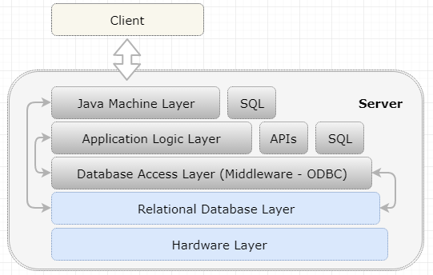

CS698-1803B-01 Computer Science Capstone
Light ERP Implantation Plan for PT Matahari
Dong Myeong Seo
09/18/2018
Colorado Technical University
Abstract – It is known that the Enterprise Resources Planning (ERP) increases the productivity of a certain company tremendously through the integration between different systems, and planning/forecasting based on the transaction data. However, a small company like PT Matahari cannot make transition to the digital company because software vendors try to sell software on one-for-all basis when a small number of features in it are required, which resulted in the barrier for small enterprises to implement and maintain it. In modern computing environment, the cloud computing with the service oriented architecture (SOA) of enterprise solutions enable small companies to transform its business model without spending millions of dollars upfront. The rapid enhancement of network infrastructure and better security measurement from the cloud computing vendors accelerate these migration for large enterprises as well as small companies. The Software as a Service (SaaS) model in the cloud will enable PT Matahari to enjoy the best crop of enterprise solutions without having ownership of software to use with better security measurement than on-premises solutions available now.
Table of Contents
1 Project Outline.................................................................................. 3
1.1 Company Overview................................................................................... 3
1.2 Project Outline............................................................................................ 3
2 Problem Identification...................................................................... 4
2.1 Problem Context and Background.......................................................... 5
2.2 Problem Statement..................................................................................... 5
2.3 Hypothesis Statement................................................................................ 5
2.4 Subject Matter Areas................................................................................. 6
2.4.1 Unified Modeling Language (UML).................................................. 6
2.4.2 Object Oriented Design (OOD).......................................................... 6
2.4.3 Layered Style – Enterprise Solutions................................................. 6
2.4.4 Required Feature.................................................................................... 7
3 Topic Research.................................................................................. 8
3.1 Topic Research Using Case Study.......................................................... 8
3.1.1 Research Questions............................................................................... 9
3.1.2 Case Selection and Determine Data Gathering and Analysis Technique.............................................................................................................. 9
3.1.3 Prepare to Collect the Data.................................................................. 9
3.1.4 Collect Data in the Field.................................................................... 10
3.2 Related Works.......................................................................................... 10
3.2.1 ERP Benefit.......................................................................................... 11
3.2.2 ERP in the Cloud................................................................................. 12
3.2.3 Barrier to the Cloud............................................................................ 13
4 Topic Solution................................................................................ 14
4.1 Research Design...................................................................................... 14
4.1.1 Service Oriented Architecture........................................................... 14
4.1.2 Private Cloud and Public Cloud....................................................... 16
4.1.3 Software Defined Network................................................................ 16
4.2 Solution Justification............................................................................... 17
5 Project Plan for Data Collection & Data Analysis......................... 19
5.1 Project Plan............................................................................................... 19
5.2 Risk Analysis........................................................................................... 21
5.3 Cost-Benefit Analysis............................................................................. 22
6 Conclusion and Future Works........................................................ 24
6.1 Conclusion................................................................................................ 24
6.2 Future Work.............................................................................................. 27
References............................................................................................... 29
A paint product distributer in Indonesia, PT Matahari, has more than 26 years of business with over 120 employees in different cities in Indonesia. In recent years, the demand for paint products rise rapidly because the city councils mandated to paint commercial buildings every four years. At the same time, the rising disposable income in private sectors elevates the demand for paint products as well. Naturally, lots of new competitors come into the market with advanced information technology as the network infrastructure in this region evolves quickly.
This document is to seek for the opportunity to develop a light Enterprise Resource Planning (ERP) document for PT Matahari using a formal methods in requirements and verification. This document builds complete analysis of dominating commercial ERP software to meet the needs from small and medium size enterprises. The aim is to build a light ERP software which is affordable in both implementing and maintaining it. This document comprises,
The implementation and maintenance of dominant commercial ERP software is expensive because these software have huge array of features to enable to run business in different industries and sizes. Figure 1 depicts a typical modules suites available for these commercial ERP software from SAP, Oracle, and Microsoft.
Figure 1. Typical ERP Modules
And Figure 2 depicts a typical architecture of on-premises enterprise solutions.

Figure 2. Layered On-Premises Architecture
This document will review possible implementation of ERP which is tailored for the small and medium size enterprises by focusing on core features in it.
The renounced commercial ERP vendors focus on adding the features to market their software across line of business because most enterprises need the backbone system to hold various transactions. These enterprise solutions follow good software characteristics meeting following requirements (Barbin, 2013),
So it is important to build a light ERP software which meets above characteristics and allowing users to configure country specific tax system and localized needs.
The implementation and maintenance of commercial on-premises ERP software is expensive because software vendors try to sell software developed based on one-for-all approach such that many features are not needed by a specific customer.
If the cost of ERP implementation and maintenance is related with the architectural style and the number of features unused in on-premises environment, then by correcting architectural style and by focusing on core features available in the cloud will reduce the cost of ERP implementation tremendously.
This section reviews Unified Modeling Language (UML), Object Oriented Design (OOD), Layered Style, and Features for the discourse.
UML is suitable for requirements gathering, which is several kinds of diagrams to represent different pieces of the system to develop. UML can be categorized into structure diagram and behavior diagram (Stephen, 2015). The benefits of UML are the wide acceptance, suitability for object-oriented analysis and design (OOAD), and different view per roles. The disadvantage will be it is hard to learn because of its complexity.
Since the high-level design are to identify the major types of classes which the application will use, each classes include definitions of the properties, methods, and events. OOD is defined as a programing language with five conceptual tools – encapsulation, data protection, inheritance, interface, and polymorphism. As a result, this concept is highly useful for encapsulation and abstraction which are good software elements. Well-known benefits are real-world modeling, and high code reusability with weakness in relational database let alone it is not technology (Burleson, n.d.).
As software architectural style, layered style provides different levels of abstraction where each layer only addresses its concern. The advantages of this architectural styles include high cohesion, loose coupling, and clearly defined function layers. This advantage is in its difficulties in limiting the communication only with adjacent layer. Figure 3 represents a typical layers in the enterprise solutions.

Figure 3. Layered Style for Enterprise Solutions
Since PT Matahari does not have any manufacturing and fabrication facilities, the feature required are very limited as depicted in Figure 4.

Figure 4. Inventory, Cash, and Data Transition
Through ERP implementation, PT Matahari can fulfill real-time inventory management, automatic billing, and some of business intelligence outcome based on the transaction data collected.
Rresearch is the systematic investigation into and study of materials, sources, etc. to establish facts and reach new conclusion using logical argument through thesis, antithesis, and synthesis (Johnson, n.d.). For this discourse, the case study research methodology is to be used to solve the problem that the commercial Enterprise Resource Planning (ERP) software is not suitable for small-medium size enterprise because it is expensive to implement and maintain in on-premises environment.
Case study methodology focuses on contextual analysis of a limited number of conditions or events along with their relationships. Case study is meaningful when representing and depicting a high-level view of executions on software to develop. Case study is used to organize an extensive range of information about the problem to analyze its contents of information through patterns in the data and using further analysis via cross comparison with other cases when available. So, case study is appropriate especially when the perimeter between phenomenon and context are not clear and palpable (McNamara, n.d.). Table 1 describes the pros and cons of Case Study research methods (Soy, 2006).
Table 1. Advantages and Disadvantages of Case Study Research Methodology
|
Advantages |
Disadvantages |
|
- Case study excels in understanding complex issue - Suitable for real-life situation - Case study is suited for the situation where effects are expected to be wide ranging or take a long time to appear - Situations where the context is expected to play a key role in the phenomena - Provide the basis for the application of ideas and extension of methods |
- Generality or reliability issue when a small number of cases are analyzed - Intense exposure to study can cause biased view on the findings - Selectin of a case can be challenging - The data collection and analysis highly relies on the interpretation of context |
Regardless the size of company, it is inevitable to run business through Information Technology (IT) system in modern world. Commonly, ERP is a backbone system for a certain company. But many times, the cost of implementation and maintenance of ERP system is burden for small and medium sized enterprises. So this cost factor is main huddle to transit a company into highly effective and efficient system. Naturally, current situation results into some following questions in implementing Oracle’s JDE E1 ERP system,
There are many well perceived commercial ERP software in the market now. At the outset of design phase, PT Matahari determines that it is worthwhile to review ERP software, JD Edwards (JDE) E1 from Oracle. There are over 400,000 companies which make up 12% market share globally (Infocluch, 2018). However, this huge figure is not suitable for PT Matahari regarding the size of company and their revenue. Hence, the selection of case will focus on 6,000 customer with revenue below $600 million (Quarles, 2018).
The researcher contacts the software vendor, Oracle sales team to get the list of JDE clients with the number of users are smaller than 150 and the revenue of $10 million if any. Based on the criteria made, the researcher collects reliable online sources to elicit information gathering in the area of ERP features, engineered system from sale vendor, and rate of the cloud utilization for this product with different level of services.
In software industry, there are numerous sources to collect valuable information for the problem analysis document including marketing data from various cases, price list per stack, success stories, failure stories, and roadmaps. Additionally, questions below need answering based on the research question made above as represented in table 2.
Table 2. Interview Question
|
|
Research Question |
Interview/Survey Question |
|
1 |
How the selection of ERP features affect the implementation cost of system in the cloud for a small enterprise? |
What is revenue of your company? What is the number of users? What are the required features in JDE E1? |
|
2 |
How commercial cloud mitigate security concern for successful transition from on-premises to the cloud?
|
What is the level of service (IaaS, PaaS, or SaaS)? Who is responsible for the security? What is security concern in the cloud? |
The advent of information technology has affected the JDE E1 positively since it is in the market in 1991. JDE started from World Software which is written using Report Program Generator (RPG) when the days run enterprise solution using IBM minicomputer operating systems, which confined the dependency on its platform. Later, whole code got rewritten using C and C++ which made the system to be platform and database independent. The evolution continues from client-server system to layered system to move to the HTML and XML interface in the end. The transformation has been continued since Oracle purchased JD Edwards in 2005. Currently, there is no in-depth research on JDE E1 because there is some gap between the enterprise solution and theory when the technology for enterprise solution evolves quicker than any other area of software development. This section reviews the benefit of ERP implementation, the ERP in the cloud, and the risk of the cloud.
According to SelectHub, ERP software has advantages, and disadvantages as the table 3 represents (SelectHub, n.d.). Small companies hesitate to move forward transition because of ERP is expensive even though ERP itself is an IT solution.
Table 3. ERP Advantages and Disadvantages
|
Advantages |
Disadvantages |
|
- Lower IT Cost: through efficiency - Total Visibility: through integrity with a single solution for daily transactions - Improved Reporting and Planning: a single database enables analysis of data - Improved Efficiency: using standardized business model - Better Customer Service: comprehensive price rule and history of sales - Data Security: security in various layer - Improved Collaboration: through clear cause and effect of data generated - Deep integration: the flow of status using standard applications - Improved Data Quality: using relational database - Standardized Business Process: enabling the company move to the industry standard - Regulatory Compliance: based on the flexible rule defined - Superior Scalability: Object driven architecture |
- Direct Cost: the implementation cost about a half million for JDE E1 - Indirect Cost: potential cost for maintenance - Customization: Each country, and organization may have different way to run business
|
Oracle who owns various business solutions has high initiative to move both potential and exiting clients to the cloud. Many argues that on-premises ERP is dead and others do not agree with whole idea of cloud as well. As depicted in figure 5, these services include the Infrastructure as a service (IaaS), Platform as a Service (PaaS), and Software as a Service (SaaS) (Oracle, 2018).

Figure 5. Cloud Computing Stack
The cloud advocates claim that benefits of cloud service with different stack includes (Bonuccelli, 2017),
On the other hand, other literatures claim the phenomenon that big companies are not moving their infrastructure to the cloud arguing that there are limited number of fortune 500 companies excluding software company has successfully migrated their infract structure to the cloud. According to Forbes, the fear comes because (Forbes, 2017),
The primary goal of research is to formulate a solution based on the analysis made. This section entails the research methodology used and proposed solutions to the problems described in earlier section.
The selection of the research methodology is crucial for the solution to make based on the observed problem. A case study methodology is to depict a holistic view of a client’s experience. Previous section reviewed the research questions, how to select case, preparation for data collection, and data collection in the field. This section entails how to evaluate and analyze the data collected to prepare the report.
The investigator/consultant studies each organization’s written documentation and survey response data to classify unique patterns within the data for an individual company. Then consultants prepare detailed case study write-ups for each companies and segregate each interview and survey questions and answers to evaluate the usefulness of data collected. Then cross case analysis deals with a small company in on premises ERP system and cloud and a large company in on premises ERP and in the public cloud.
Solution below is made based on the analyze made, which reviews available services in the cloud for small company, the private cloud for both small and large companies, and software defined network to mitigate the security concern.
Service Oriented Architecture (SOA, or Service Oriented Infrastructure) is the organization of the components of a system. The available features in SOA architecture represents its benefits (and its disadvantage). Available features in this organization are (OpenGroup, n.d.),
Figure 6 depicts available services in the cloud. This organization is useful when a single product cannot solve problems by enabling mix and match approach and in considering the scalable systems as business grows.

Figure 6. Service Oriented Architecture in the cloud
Since the security is one of main concern for the large enterprises, there should be negotiating point between on-premises, the private cloud, the hybrid cloud, and the public cloud. Figure 7 depicts the available choices based on cost factor and control factor.

Figure 7. Types of Cloud services
Commonly, there are three options for cloud: a private cloud, a public cloud, and a hybrid with benefit presented in table 4 (Microsoft, n.d.),
Table 4. Advantages of the Private, Public, and Hybrid Cloud Options
|
Public Cloud |
Private Cloud |
Hybrid Cloud |
|
Lower Cost No maintenance Scalability High reliability |
More flexibility Improved Security High Scalability |
More control Higher flexibility Cost-effective Easier transitioning to the cloud |
As shown in the table 4, the public cloud with SaaS service is the best choice for the small company like PT Matahari where the budget for the implementation and maintenance is main concern, and the private cloud with PaaS will be better option for the large organization when the data security is main concern. It is important to leverage the cloud for both its efficiency and cost saving but also with consideration of security, privacy, and control of it.
The primary purpose of Software-Defined Network (SDN) is not to compromise the security vulnerability with proper network congestion control. A typical configuration for SDN is adding layer in between infrastructure layer and application layer to have better control on traffic. Figure 8 depicts the framework of SDN. The benefit of SDN configuration is that it is programmable directly, agile, centrally managed, programmatically configured (Opennetworking, 2017).

Figure 8. Software Defined Network
SOA, the Cloud, and SDN can be due course for PT Matahari to maintain sustainable enterprise with minimum cost of implementation and maintenance. The solution discussed in this section is to answer on the problem why a small company does not implement ERP system and why a large company does not transit to the cloud.
The key factors why a large company hesitate to move to the cloud is concerns on security, performance, and availability because these factors can disrupt its daily business seriously (Kress et al.). These quality of service factors (QoS) are enhanced tremendously as the information technology keeps on evolving. Furthermore, many large companies reckon that one enterprise solution is not sufficient to perform their businesses. Hence, mix and match approach in the cloud enables these users to pick and run from various service providers. For example, client may purchase JDE E1 as a base and extend its transportation capability by subscribing Oracle Transportation Management (OTM) after free trial.
Many small companies including PT Matahari hesitate to transit to the ERP software even though they are aware of its benefits because of its direct and indirect cost in on-premises environment. Hence, Software as a Service (SaaS) option for these entities are ideal because these companies can run ERP software without owing it. Common benefits of this model comprises easy/fast deployment; pay only for what you use; no in-house IT staff; enjoy the latest functionality and standardized business rules which are most of companies aim.
Lastly, software is fine result of physical resources, people, technology, and processes. And intelligent security system performs to predict, prevent, detect, and response against its users, network, and context. According to Oracle, Software-Defined Networking enhances application performance and management flexibility by connecting dynamically virtual machines and services to networks, storage devices, and other virtual machines (Oracle, n.d.).
This section reviews a project plan, a risk in implementing the solution reviewed previously, and a cost-benefit analysis in detail.
Figure 9 depicts the roadmap of light ERP implementation for PT Matahari in SaaS cloud. As shown in this roadmap, the time for implementation decreases tremendously from 2 years to 0.5 year for a small company like PT Matahari. There is no upfront cost incurred where most cloud vendor allows 3 to 6 months as playing around period.

Figure 9. ERP Implementation Roadmap in SaaS
Since the project is to implement the modules of Customer Relationship Management (CRM) and Financial in the cloud, which leads different approach from the conventional on-premises ERP implementation. Table 5 represents high-level plan to implement the ERP in the cloud for PT Matahari, which is given by Oracle as the best practice (Oracle, 2015).
Table 5. High Level Plan
|
Project Design |
What |
Who |
|
Project Design |
Plan Project |
Project Manager |
|
|
Conduct Kick-off Meeting |
|
|
|
Schedule Workshop |
|
|
|
Conduct Functional Design Workshop |
|
|
|
Conduct Technical Design Workshop |
|
|
|
Conduct Design Review |
|
|
|
Develop Security and Validation Strategy |
|
|
Configure |
Setup Applications |
Project Manager, |
|
|
Validate Configuration |
Business Analyst, and |
|
|
Load & Validate Data |
Super users |
|
|
Build & Validate Integration |
|
|
|
Implement Security |
|
|
|
Prepare Cutover Strategy |
|
|
Validate |
Update setups |
Business Analysis, and |
|
|
Load & Validate Data |
Super users |
|
|
Conduct End-to-End Review |
|
|
|
Prepare for Training |
|
|
|
Train power users |
|
|
Transition |
Migration configuration to the Production |
Oracle as a Product Vendor |
|
|
Load and Validate in Production |
|
|
|
Verify Production & Operational Readiness |
|
|
|
Begin Production Use |
|
|
Realization |
Manage Transition to Steady-state Operations |
PT Matahari and |
|
|
Post Go-Live Support |
Project Manager |
|
|
Handoff to Client Relationship Manager |
|
|
|
Gain Acceptance |
|
|
|
Close Project |
|
Table 6 gives detail activities, duration, resource, and its cost breakdown which are relevant to a small company. In this table, the resources comprise Project Manager (PM), Business Analyst (BA) from the consulting firm who has rich experience in implanting Oracle’s JD Edwards EnterpriseOne, and Power User (PU) from PT Matahari for configuration and business decision. The denomination of cost is USD where the cost of BA is 50 Dollar per hour.
Table 6. SaaS Project Plan for PT Matahari
|
Activity |
Start |
End |
Resource |
On-Premises |
SaaS |
|
Finalize Solution Configuration & Customization Plan (5 months) |
10/01/18 |
02/28/19 |
PM (1), BA (2), PU (2) |
100,000.00 |
100,000.00 |
|
Plan Implementation (1 month) |
03/01/19 |
03/31/19 |
BA (2), PU (2) |
40,000.00 |
40,000.00 |
|
Provide Data Center Facility |
50,000.00 |
0.00 |
|||
|
Acquire, Implement, and Test Hardware |
|
|
|
500,000.00 |
0.00 |
|
Acquire, Implement, and Test Software |
500,000.00 |
0.00 |
|||
|
Setup SSO Security with SaaS Provider (1/4 month) |
04/01/19 |
04/07/19 |
PU (2), SP (1) |
0.00 |
0.00 |
|
Configure Application Functionality (1 ¾ month) |
04/08/19 |
05/31/19 |
BA (2), PU (2) |
40,000.00 |
40,000.00 |
|
Customize Application for PT Matahari (1 month) |
06/01/19 |
06/30/19 |
BA (2), PU (2) |
20,000.00 |
20,000.00 |
|
Data Migrations, Conversions, Integrations (1/2 Month) |
07/01/19 |
07/14/19 |
PU (1), SP (1) |
0.00 |
0.00 |
|
Test Customized App in User Environment (2 ½ Month) |
07/15/19 |
09/30/19 |
BA (2), PU (2) |
60,000.00 |
60,000.00 |
|
SaaS Subscription Activation |
PU (1), SP (1) |
0.00 |
144,000.00 |
||
|
Solution Rollout |
10/01/19 |
10/30/19 |
PM (1), BA (2), PU (2) |
40,000.00 |
40,000.00 |
|
End User Training |
11/01/19 |
11/30/19 |
BA (2), PU (2) |
40,000.00 |
40,000.00 |
|
Change Management |
10/01/19 |
~ |
|
|
|
|
Solution Management |
10/01/19 |
~ |
|
||
|
Help Desk |
10/01/19 |
~ |
|
100,000.00 |
100,000.00 |
|
12 Months |
$ 1,490,000.00 |
$ 584,000.00 |
|||
Note: Above table is written based on figure 9 which is a guided methods from Enterprise Software Initiative (DoD, n.d)
Risks affect the success of project directly. Project manager lists up possible risk caused by budget, cost, and resource and share it with high level management for the success of the ERP implementation project as depicted in figure 10.

Figure 10. Project Constraints
Table 7 represents three main risks in cloud ERP implementation and its mitigation activities. The risk factors are directly related with why large enterprises hesitate to move to their enterprise solutions to the cloud.
Table 7. Cloud ERP Risk and Mitigation
|
Risk |
Detail |
Mitigation |
|
Security |
Main concern of cloud-based enterprise solutions. Since all computers are connected to each other, the security risk is inevitable. |
The software vendor Oracle assures the strongest security through Software Defined Network. Preventive, detective and administrative security measures are in place
|
|
Change Management |
The standardization makes it possible faster implementation than on-premises implementation. |
The hosting providers assures the maintenance and deployment of updates and fixes through Agile development methodology. This plan is related with the financial health of vendor, Oracle. Another approach commonly used is phased ERP implementation instead of a ‘Big Bang’ approach.
|
|
Regulation & Compliance |
Depending on the types of business there are rules and regulations to comply with. This factor is related with the benefit of ERP which ships these regulation and compliance |
A bigger solution provider enables various line of business to meet the legal requirements across the industry. It is important to approach the solution from the business process point of view than technical view. |
There are other risks which can be categorized by technical risks, scheduling risks, commercial risks, resource (organizational, human resources, information delivery) risks, outsourcing risks, environmental risks, contractual risks, product responsibility risks, and localization risks (Johansson, 2013).
A cost-benefit analysis is to determine how well the planned action will turn out based on the benefits in positive and the costs in negative (Reh, 2018). Table 8 reviews cost-benefit analysis in implementing ERP in SaaS which is offered by Oracle who is the vendor for enterprise solutions and the cloud service.
Table 8. Cost-Benefit Analysis – Implementing SaaS ERP
|
Activity |
On-Premises |
SaaS |
Others |
|
Upfront Cost |
|
||
|
Facility Maintenance (Space, Electricity) |
(5,000.00) |
0.00 |
Space, electricity usage, insurance and so on |
|
Acquisition of Engineered System |
(50,000.00) |
0.00 |
Cheapest engineered system including operating system, database server, and hardware |
|
Acquisition of ERP Solution |
(500,000.00) |
0.00 |
Based on all-in-one package |
|
Operating Cost |
|
||
|
IT Staffing (2) |
(20,000.00) |
0.00 |
Salary for 2 IT staffs |
|
ERP Maintenance Contract |
(4,167.00) |
|
Based on 50,000.00 annual plan |
|
Deployment Cost/Speed |
|
||
|
Upgrades and Updates |
|
||
|
Subscription Expenses (10 users * 2 modules) |
0.00 |
(12,000.00) |
10 users with 2 modules per month |
|
System Performance (productivity loss) |
0.00 |
(5,000.00) |
|
|
Increased Revenue |
|
||
|
Reduce Labor Cost |
20,000.00 |
||
|
Engineered System |
833.00 |
5 Years amortization |
|
|
ERP Solution Acquisition |
8,333.00 |
5 Years amortization |
|
|
ERP Maintenance Cost Saving |
4,167.00 |
Subscription includes maintenance of system |
|
|
Net Saving Per Month |
$ 17,000.00 |
Note: Cost shown per month and amortized over five years.
Cost-Benefit analysis shows that the implementation of ERP in SaaS environment save costs even excluding other intangible benefits as ERP software promises. ERP implementation in SaaS can save over $17,000 per month which yields $204,000 a year.
This section formulates conclusions against the hypothesis formed and additionally, reviews some emerging technology in ERP which may affect the enterprise solutions to implement for PT Matahari in coming years.
Here reviews overall approaches made in yielding the conclusion of the research work made so far. Table 9 represents the methods and its corresponding contents for this research document for PT Matahari.
Table 9. Summary of Research Activities
|
Methods |
Implementation |
|
Choose the Topic |
The enterprise solution based upon over 17 years of experience. For this research, Oracle’s JD Edwards EnterpriseOne ERP software is chosen because this product is best known ERP for the small and medium size enterprises like the client, PT Matahari.
|
|
Identify a Problem |
The implementation and maintenance of commercial on-premises ERP is expensive because software vendors try to sell software developed based on one-for-all approach such that many features are not needed by a specific customer.
|
|
Research the Problem |
Through a case study research method, the researchers review the benefit of ERP software, the cost of on-premises ERP and infrastructure, the available cloud services and its cost including why bigger companies does not migrate to the cloud.
|
|
Form a Hypothesis |
If the cost of ERP implementation and maintenance is related with the architectural style and the number of features unused in on-premises environment, then by correcting architectural style and by focusing on core features available in the cloud will reduce the cost of ERP implementation tremendously.
|
|
Design the Experiments |
There is not an actual experiment to justify the hypothesis since this project is not directly related with software development.
|
|
Test the Hypothesis |
This document is more about current market analysis by collecting various sources of data. Hence, collecting data and cases through a case study method suffices the analysis.
|
|
Analyze the Result |
The approach to justify the hypothesis is the time and cost effectiveness by comparing the time, budget, resources between on-premises and the cloud system. The comparison is made between the cost of on-premises implementation and the cost of the cloud implementation.
|
|
Formulate and Report Conclusions |
The Cost-Benefit analysis derives that the cost of ERP implementation in SaaS cloud makes a small company to have a viable option to employ the ERP software. To reach this conclusion, the cost-benefit analysis compares reviews the cost incurred what-if basis. This approach is natural because the ERP implementation is not migration but a brand new utilization of enterprise solution. |
The realization of enterprise solutions in the developing countries like Indonesia is tardy because there are widespread ignorance of modern IT technology and insufficient IT infrastructure especially in the area of computer network. On the other hand, the overwhelming usage of Internet or social media in the globe and advent of its Internet infrastructure enable the business player in Indonesia to keep pace with other models in developed countries.
It is high time for a small company to analyze available enterprise solutions in the market and seek for the most cost effective applications to compete with the bigger market players. The main barrier in moving one organization to the digital domain is that the software is too expensive in implementing it in on-premises environment because the software vendor tries to sell it as one-for-all approach where a small company is wanting a small fraction of those available features because of the constraint of budget.
Overall, the hypothesis in this research document proves that the implementation of limited modules through SaaS service in the cloud become very much viable option to have competitive edge against its larger competitors. The solutions in this research document entails below,
In conclusion, it is highly recommended for PT Matahari to implement Oracle’s JD Edwards EnterpriseOne ERP in the SaaS cloud service which is offered by Oracle because this transition shall enable PT Mathari to embrace the modern enterprise solutions without spending huge amount for the same.
According to PwC, the outlook of emerging technology in coming decades are Internet of Things (IoT), Augmented Reality (AR), Virtual Reality (VR), Blockchain, Artificial Intelligence (AI), 3D Printing, Drones, Robots, and so forth (Eckert, 2016).
The biggest benefit of ERP applications is its nature of planning and forecasting based on data. Hence, it is natural to adapt the emerging technology which is pertinent to the ERP systems. Some of applicable essential emerging technologies in the business solutions are (Linden, 2017),
As Heraclitus said around 2500 years ago, “The only thing that is constant is cahnge.” Things around us change, but the methodology and frameworks in the software engineering remains. It is important to get ready to change (or, the change readiness) to the future to come and build applicable knowledge to cope with the challenges using the frameworks and methodologies learnt. Probably, the machine learning in the artificial engineering area may do its job in the computer science research area soon when these machines learn, understand, and reason the IT ecosystem beyond the subject matter.
Barbin, L. (2013). Software Design Principles. [Kindle Edition]. ISBN: 978-0-9920839-0-8
Bonuccelli, G. (2017). Why are so many Business moving to the Cloud? Retrieved August 29, 2018, from https://www.parallels.com/blogs/ras/why-cloud-computing/
Burleson, D. (n.d.). Advantages and Disadvantages of Object-Oriented Approach. Retrieved August 16, 2018, from http://www.dba-oracle.com/t_object_oriented_approach.htm
Collins, M. (1998). Formal Methods. Retrieved August 15, 2018, from https://users.ece.cmu.edu/~koopman/des_s99/formal_methods/
DoD. (n.d.). Process Roadmap. Retrieved September 10, 2018, from http://www.esi.mil/saas_toolkit/process_roadmap.html
Eckert, H. V. (2016). What are the Eight Essential Emerging Technologies for Business? Retrieved September 14, 2018, from https://www.voxcreative.com/sponsored/12522932/what-are-the-eight-essential-emerging-technologies-for-business
Forbes. (2017). 13 Biggest Challenges When Moving Your Business to the Cloud. Retrieved August 29, 2018, from
Gupta, A. (2014). Research Methods in CS. Retrieved August 23, 2018, from https://drive.google.com/file/d/0BzJcmXkDVbG_ZURBUWR4NVFJaFE/view
Infocluch. (n.d.). JD Edwards Customers List. Retrieved August 27, 2018, from https://www.infoclutch.com/installed-base/erp/jd-edwards/
Johansson, T. (2013). Defining an Implementation Project for a Cloud Based Enterprise POS System. Retrieved September 10, 2018, from https://www.theseus.fi/bitstream/handle/10024/62608/Opinnaytetyo_Johansson_Final.pdf?sequence=1
Johnson, C. (n.d.). What is Research in Computing Science? Retrieved August 24, 2018, from http://www.dcs.gla.ac.uk/~johnson/teaching/research_skills/research.html
Kress, J. et al. (2014). SOA and Cloud Computing. Retrieved September 3, 2018, from https://www.oracle.com/technetwork/articles/soa/ind-soa-cloud-2190513.html
Linden, G. (2017). Four Technology Trends and Their Impact on ERP. Retrieved September 14, 2018, from https://www.avanade.com/en/blogs/avanade-insights/erp/four-technology-trends-and-their-impact-on-erp
McNamara, C. (n.d.). Basics of Developing Case Studies. Retrieved August 23, 2018, from https://managementhelp.org/businessresearch/case-studies.htm
Microsoft. (n.d.). What are Public, Private, and Hybrid Clouds? Retrieved September 3, 2018, from https://azure.microsoft.com/en-us/overview/what-are-private-public-hybrid-clouds/
Open Network Foundation. (2012). Software-Defined Networking: The New Norm for Networks. Retrieved September 3, 2018, from https://www.opennetworking.org/images/stories/downloads/sdn-resources/white-papers/wp-sdn-newnorm.pdf
OpenGroup. (n.d.). Service-Oriented Architecture – SOA Features and Benefits. Retrieved September 3, 2018, from http://www.opengroup.org/soa/source-book/soa/p4.htm#tbl1
Oracle. (2015). Oracle Enterprise Resource Planning Cloud Service Implementation Leading Practices. Retrieved September 10, 2018, from https://cloud.oracle.com/_downloads/WhitePaper_ERP_ImplLeadPract_es_ES/Oracle-ERP-Cloud-Implementation-Leading-Practices-white-paper.pdf
Oracle. (n.d.). Oracle SDN Performance Acceleration with Software-Defined Networking. Retrieved September 3, 2018, from http://www.oracle.com/us/products/networking/virtual-networking/sdn/oracle-sdn-ds-1873198.pdf
Oracle. (2018). Why Move to the Oracle Cloud. Retrieved August 28, 2018, from https://cloud.oracle.com/home
Quarles, W. (2018). Is JD Edwards Dead? Retrieved August 27, 2018, from https://cloud.oracle.com/en_US/homehttps://whitelightgrp.com/jd-edwards-dead/
Reh, F. J. (2018). Cost Benefit Analysis Example. Retrieved September 10, 2018, from https://www.thebalancecareers.com/cost-benefit-analysis-2275277
SelectHub. (n.d.). ERP Advantages and Disadvantages. Retrieved August 29, 2018, from https://selecthub.com/enterprise-resource-planning/erp-advantages-and-disadvantages/
Soy, S. K. (2006). The Case Study as a Research Method. Retrieved August 23, 2018, from https://www.ischool.utexas.edu/~ssoy/usesusers/l391d1b.htm
Stephens, R. (2015). Beginning software engineering. Indianapolis, IN. Wrox, a Wiley Brand.
Tsui, F. F. (2017). Essentials of Software Engineering. Sudbury: Jones & Bartlett Learning. Retrieved August 15, 2018, from CTU Online Library http://proquestcombo.safaribooksonline.com.proxy.cecybrary.com/book/software-engineering-and-development/9781284106077